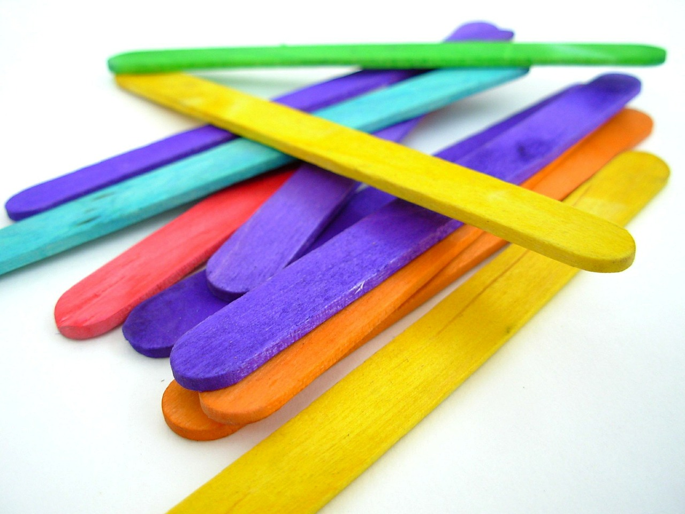

Tower Crane

Introduction
Inspired by the actual design of tower crane and modelled on similar lines, this competition combines the intricacies of structural design
along with the complex science of construction.In this competition, the participants are required to build a tower crane which supports two counter
balancing loads at different ends of the cantilever in accordance with the design constraints.An optimised 3-dimensional truss has to be constructed
which can sustain extensive moments and loads, thus taking the concept of making planar structures to a higher level.
Rules
Participants have to prepare the models at home, so certificates will be awarded to all participants.
Each team should consist of three or less than three members,preferably from the same institute.Each member is required to have a student ID
of their respective Institute
Specifications
Make a tower crane,the structure must be made only from popsicle sticks and adhesive,which consist of a vertical mast and a lever-arm to support loads.
The crane(point of loading) must be able to reach a height of 600mm and have a range of 600mm - error of 10% allowable.
The main mast starting from base should be vertical.
The base and vertical mast should be within an area of 200X200 mm at any cross-section.
The lever arm should have an area less than 200X200 mm at any cross-section.
The base must have extension of 3-4 cm at the base on both sides along the lever-arm direction, to hold the structure to the ground.
The height of the mast can be anything but the angle of the lever arm with the horizontal must be below 22.5 degree -Clockwise/Anticlockwise.
Hooks must be provided at the ends of the lever arm to support the load where the structure would be loaded and counter-loaded.
For counter balancing load, loading pan and weight will be provided at the competition.Participants will be allowed to increase counter balance load on the loading
pan only three times after the commencement of loading.Hook on the counter balancing side must be atleast 20 cm apart from the main structure.
The structure should be a truss and not a beam.
Over-lap Criteria-Not more than two sticks must have a complete side-side overlap.
Joint Criteria
-Overlap of two members at a joint must not be greater than 20mm on either side.
No lateral supports in the form of struts should be present.
Critical point exemption-Base and hook regions are exempted from over-lap criteria i.e, any number of sticks can be overlapped over each other.
For the hook region only a length of 5 cm along the lever arm is exempted.Base region is exempted only up to a height of 4cm from the bottom.Failing to abide by above terms will lead to intermediate disqualification.
Materials
The Tower crane must be constructed only form popsicle sticks(120mm X 12mm X 2mm) and adhesives.(Synthetic white adhesive or single component
cyano-acrylate adhesive).No other materials may be used.The tower crane should not be stained,painted or coated in any fashion with any foreign substance.
The popsicle sticks may be cut or trimmed to any shape or size.
The adhesive can only be used to join popsicle sticks together; however adhesives cannot be applied on the free surface of the member sticks to increase its strength.
Grading Criteria
The scoring will depend on:
Self-weight:Mean and standard deviation of all the entries will be found and M-factor will be calculated by using the following formula:
M=(self-weight - mean of self-weight of all entries)/Std. of maximum load of all entries.Loading:The maximum load of all the entries will be found and K-factor will be calculated by using the following formula:
K=(maximum load - mean of maximum load of all entries)/Std. of maximum load of all entries.The final score will be given by 8*k factor - 2*M factor.